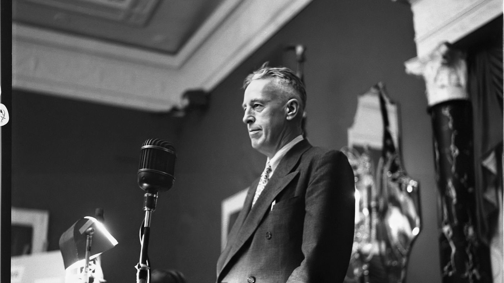
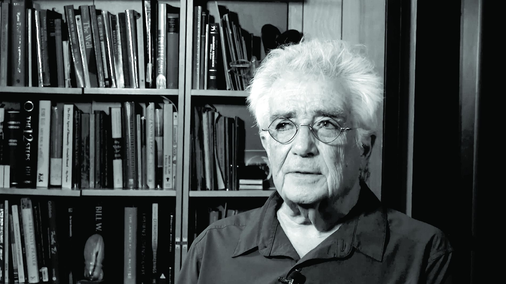
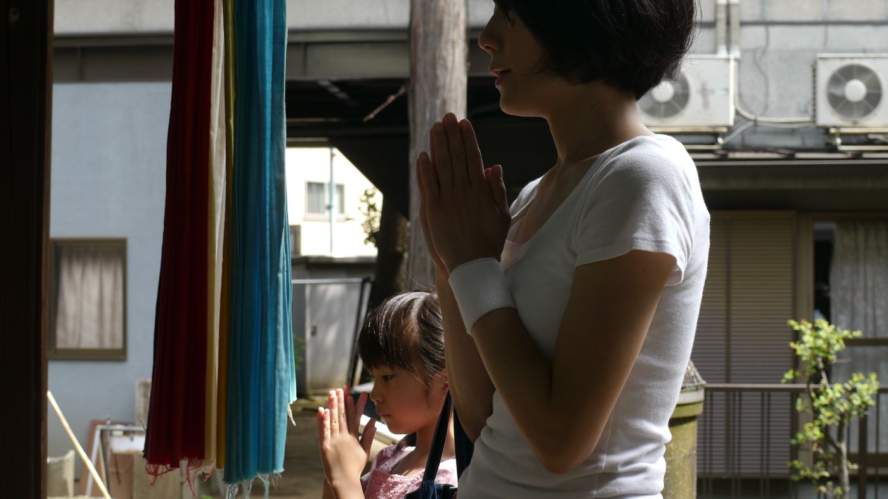
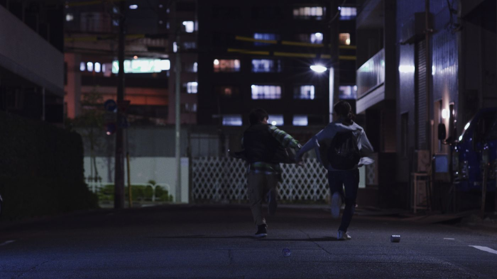
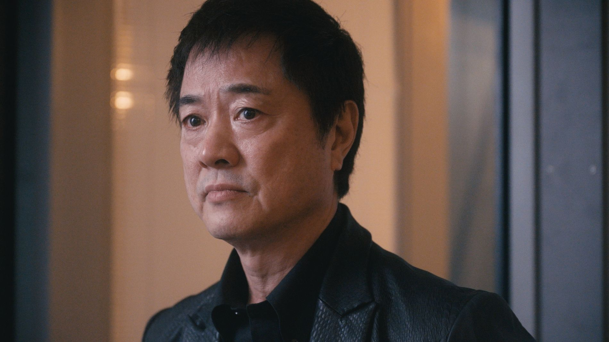
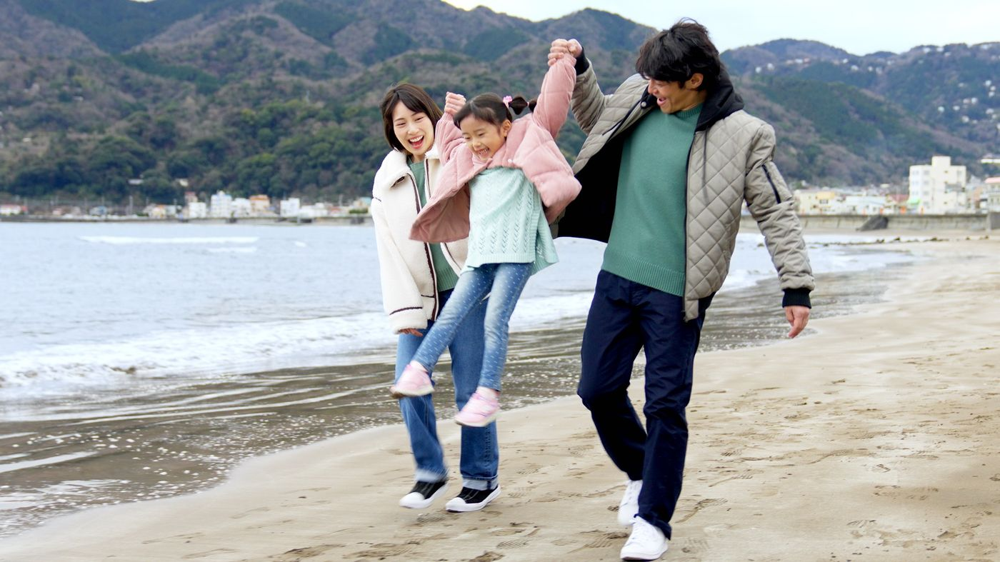

Documentary ・ 104min〔確認中〕 Bill W. Directed by Kevin Hanlon アルコホーリクス・アノニマス共同創始者ビル・ウィルソン。その内的変容を、共同創始者としてではなく一人の男の生涯として辿る。映画1本ごとに、トークショーを。
上映して終わりにはしません。1本ごとに、その場でトークショーを併催します。作品の感想から始まり、いつのまにか依存症の話になっている。その流れを2日間くり返します。
上映作品

Documentary ・ 104min〔確認中〕 Bill W. Directed by Kevin Hanlon アルコホーリクス・アノニマス共同創始者ビル・ウィルソン。その内的変容を、共同創始者としてではなく一人の男の生涯として辿る。
Documentary ・ 58min〔確認中〕 Bill W. Conscious Contact Directed by Kevin Hanlon 霊的な探求者としてのビル・ウィルソン。ニューヨークの旧宅ステッピング・ストーンズに残された記録から、その旅を描く。
Short ・ 30min 微熱 Binetsu / Slight Fever 遊技台の光の前に立ちつづける男と、その傍らで日々を送る家族。現代日本の暗がりを、静かな筆致で描く。
Short ・ 2020 ・ 27min〔確認中〕 一瞬の楽園 A Moment of Paradise 重度のギャンブル依存症のケンタと、借金を抱えたベトナム人留学生ハン。暗闇に生きる二人が、光を求めてともに歩く。
Feature ・ 2024 ・ 82min アディクトを待ちながら Waiting for the Addict やめたい。やめたい。誰か助けて——。実際に回復を続けている当事者や家族が多数出演し、依存症ゴスペルグループの再結成をめぐる日々を描く。アディクト（依存症者）に回復はあるのか。
Short ・ 2023 ・ 30min 嘘つきは〇○のはじまり SECRET 優しい夫、かわいい娘、やりがいのある仕事に、頼れるママ友。誰もがうらやむ彼女には、誰にも言えない秘密がありました。※ 上映日時はタイムスケジュール案に基づくもので、変更になる場合があります。登壇者は決まりしだい発表します。年齢の目安は調整中です。作品画像は各作品の宣伝素材をお借りしています。
上映作品／Films
映画ファンを唸らせる、国内外の受賞作や芸術性の高いエッジの効いた作品をラインナップします。啓発用に作られた映像ではなく、映画館で観るために作られた映画を選びます。長編2本・中編1本・短編3本の全6作品が決定しました。
トークショー／Talk Show
上映後、同じホールでそのままトークへ。啓発っぽさを排除し、作品の感想戦の延長で語られるカジュアルで深いクロストークになるよう、ゲストを厳選します。依存症から回復した著名人にも登壇いただく予定です。
啓発ノベルティ／Novelty
プレミア感とデザイン性にこだわった啓発グッズを来場者に配布します。会場を出たあとも手元に残るものを想定しています。
2日間のタイムスケジュール
| 時間 | DAY 1｜10月11日（日） | 時間 | DAY 2｜10月12日（月・祝） |
|---|---|---|---|
| 13:00 | 受付開始 | 10:00 | アディクトを待ちながら（82分） |
| 13:30 | オープニングセレモニー | 11:30 | トークショー ③ |
| 14:45 | Bill W.（104分） | 12:15 | 休憩 |
| 16:30 | トークショー ① | 13:30 | 嘘つきは〇○のはじまり（30分） |
| 18:00 | 微熱（30分） | 14:00 | トークショー ④ |
| 18:30 | 一瞬の楽園（30分） | 15:00 | Bill W. Conscious Contact（58分） |
| 19:00 | トークショー ②／会場とのセッション | 16:15 | 特別講演 |
| 17:30 | 質疑応答 | ||
| 18:30 | クロージングセレモニー |
※ タイムスケジュールは案です。開始時刻は変更になる場合があります。登壇者は決まりしだい発表します。
会場
2日間を通して、会場は1か所です。分散させず、同じ空間に人が集まりつづける構成にします。上映もトークも同じホールで行うため、席を立たずにそのまま話を聴くことができます。
アクセス・座席図・バリアフリー情報は、確定しだい掲載します。
・ノベルティの受け取り
・支援団体・相談窓口のご案内ブース
・書籍や資料の展示
・トーク登壇者との交流スペース
※ 企画書に記載のない想定です。実施の可否は今後の検討によります。